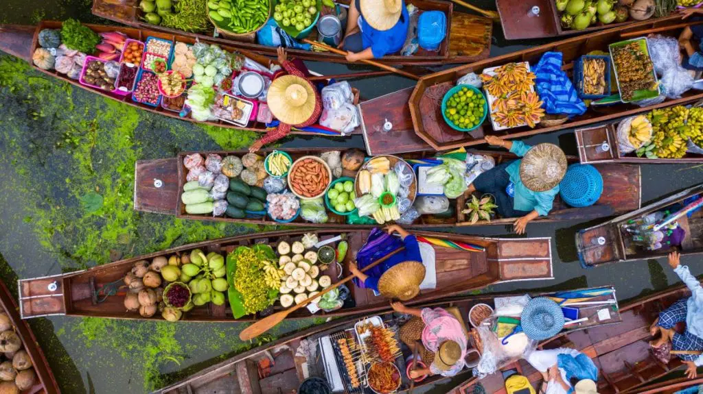
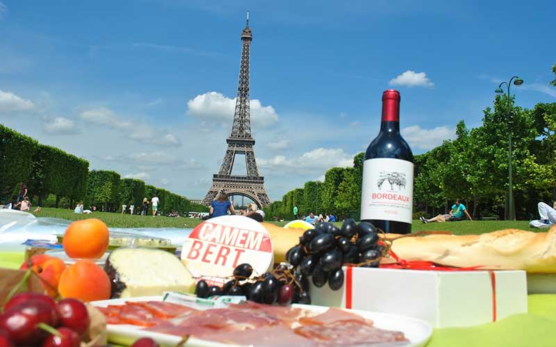
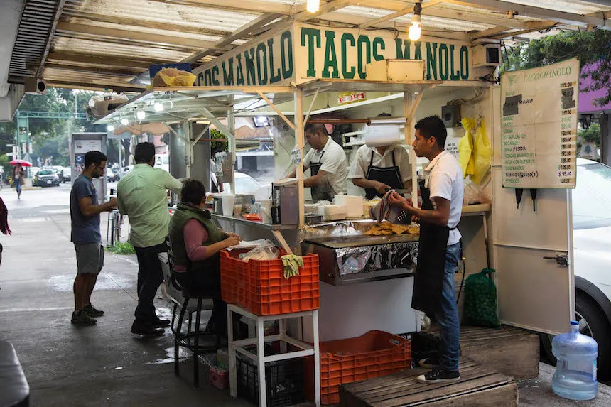

Capítulo 1: El Descubrimiento
Bienvenidos a "Explorando la Ruta del Sabor", donde nos aventuramos a través de un viaje gastronómico que nos llevará a descubrir los sabores más auténticos de cada rincón del mundo. Nuestra historia comienza con un grupo de amigos apasionados por la cocina y la cultura, decididos a embarcarse en una aventura culinaria que cambiará sus vidas para siempre. Un cálido día de primavera, en el corazón de una ciudad bulliciosa, estos intrépidos aventureros se reunieron para planear su emocionante viaje. Armados con mochilas, cámaras y una gran dosis de curiosidad, partieron hacia destinos desconocidos con la promesa de probar las delicias que cada país tenía para ofrecer.
Capítulo 2: El Encuentro con lo Exótico
Nuestro primer destino fue Tailandia, una tierra llena de exotismo y tradición. Al llegar, nos recibieron los aromas embriagadores de la cocina tailandesa: el picante del curry, la frescura de la lemongrass y la cremosidad del coco. Nos aventuramos en los mercados locales, donde vendedores entusiastas nos ofrecieron platos típicos como el Pad Thai y Tom Yum Goong. En cada bocado, sentimos la explosión de sabores únicos y la armonía de ingredientes frescos. Con el estómago lleno y el corazón aún más contento, dejamos Tailandia con una nueva apreciación por la comida y la cultura asiática.
Capítulo 3: La Elegancia Francesa
Nuestro siguiente destino nos llevó a Francia, la cuna de la alta cocina. Aquí, nos sumergimos en la elegancia de la gastronomía francesa, con su sofisticada presentación y sabores refinados. Degustamos croissants recién horneados, quesos artesanales y la clásica ratatouille. Caminando por las calles empedradas de París, aprendimos sobre la importancia de los ingredientes de calidad y las técnicas culinarias meticulosas que definen a la cocina francesa. Después de deleitarnos con los manjares de este país, nos sentimos inspirados a replicar algunas de estas deliciosas recetas en nuestros propios hogares.
Capítulo 4: El Sabor de la Calidez Mexicana
Nuestro viaje nos llevó al vibrante México, donde nos sumergimos en la pasión y el sabor de la auténtica comida mexicana. Nos encantaron los tacos al pastor, las enchiladas suizas y el fresco guacamole. Pero lo que realmente nos conquistó fue la hospitalidad de la gente y la forma en que compartían su amor por la comida. Con el estómago lleno de auténticos sabores mexicanos y el corazón lleno de gratitud, nos despedimos de este hermoso país, llevando con nosotros recetas y experiencias que recordaríamos para siempre.
Epílogo: Un Viaje Inolvidable
Nuestro viaje a través de la Ruta del Sabor fue una experiencia que nos cambió para siempre. Descubrimos que la comida es más que solo nutrientes; es una forma de conectar con la gente y explorar culturas. Cada bocado nos llevó a un lugar nuevo, y cada comida nos contó una historia. En nuestro camino de vuelta a casa, nos dimos cuenta de que la ruta del sabor nunca termina. Continuaremos explorando, probando y compartiendo estas delicias con el mundo, porque la comida es el idioma universal que une a todos. Únete a nosotros en este viaje de sabores, ¡y juntos exploraremos el fascinante mundo de la gastronomía!